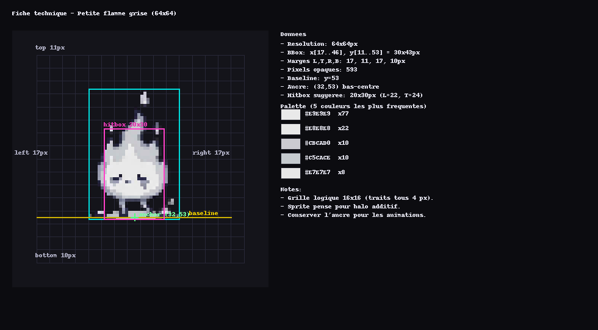

Développement web
Création de pages web simples, propres et organisées.
Portfolio BTS SIO SLAM
Je suis étudiant en BTS SIO option SLAM. J’apprends à créer des sites web, des applications, des bases de données et des projets concrets. Je m’intéresse particulièrement au développement web, au game design et aux projets interactifs.
01
Je m’appelle Enzo Bertrand. Je suis en BTS SIO option SLAM à l’ESTIAM. Je suis curieux, patient et motivé. J’aime apprendre en pratiquant, surtout quand le projet a un vrai but.
J’aime beaucoup le développement, mais aussi le game design. J’aime réfléchir à une idée, imaginer comment elle fonctionne, puis essayer de la transformer en projet réel avec du code.
02
Création de pages web simples, propres et organisées.
Création de tables, gestion des utilisateurs et requêtes SQL.
Utilisation d’outils pour coder, tester et versionner mes projets.
Qualités utiles dans le développement et le travail en équipe.
03
Application web réalisée dans le cadre de ma formation. L'utilisateur peut se connecter, importer des webtoons, les noter et les ajouter à sa liste.
Documentation rapide
Gérer une bibliothèque de webtoons avec ajout, recherche, modification, suppression et suivi d’état.
CRUD, base locale, interface graphique, gestion des informations principales d’un webtoon.
Développement applicatif, gestion des données, organisation du projet et tests fonctionnels.
Ce projet m’a aidé à mieux structurer une application complète et à relier interface, code et données.
Application en C# permettant de suivre les revenus, les dépenses et le solde d'un utilisateur.
Documentation rapide
Créer une application de gestion de porte-monnaie pour suivre revenus, dépenses et solde.
Ajout de transactions, catégories, historique, calcul automatique du solde et gestion des données.
C#, logique applicative, base de données, CRUD, tests de calcul et interface utilisateur.
Ce projet m’a permis de progresser sur une application de gestion et sur la fiabilité des données affichées.
Projet personnel lié au jeu vidéo, avec des essais autour d'un mini-jeu, d'une flamme et de modifications graphiques. Ce projet m'a permis de mieux comprendre la logique d'un jeu.
Fiche technique - petite flamme grise

Projet expérimental - Space Invader
Petit bonus interactif intégré au portfolio. Ce mini-jeu reprend un esprit arcade inspiré de Space Invader, dans une version cohérente avec mon univers graphique et mon intérêt pour le game design.
Projet personnel de modification d'un jeu existant. Ce projet m'a permis de découvrir la logique du modding, la modification de ressources et l'ajout d'éléments personnalisés dans un environnement de jeu.
05
Cette partie permet de relier mes projets, mes missions en entreprise et ma veille technologique aux compétences attendues dans le référentiel du BTS SIO option SLAM. Elle aide à montrer clairement ce que chaque réalisation m’a permis de travailler.
Cette synthèse présente les compétences de façon lisible pour le portfolio. Le document officiel du BTS SIO, avec les cases de validation, doit rester disponible à part pour le jury.
Tableau officiel à ajouter (.xlsx)Mes projets de formation montrent mes compétences en développement et en gestion de données. Mon alternance me permet de travailler la partie support, diagnostic, migration et accompagnement utilisateur. Ma veille technologique montre ma capacité à suivre l’évolution d’un sujet technique en lien avec mes centres d’intérêt.
06
En entreprise, je participe au support informatique, aux migrations et à la préparation des postes. J’interviens sur des demandes utilisateurs, des incidents matériels et logiciels, ainsi que sur des projets techniques liés au parc informatique.
Mission 01
Participation à la migration vers l’environnement Google et accompagnement des utilisateurs pendant la transition.
Mission 02
Participation à la migration de postes vers Windows 11, avec vérification du bon fonctionnement après installation.
Mission 03
Mise en place et utilisation d’un banc de masterisation pour installer Windows 11 sur des postes via boot Ethernet / démarrage réseau.
Mission 04
Traitement de tickets support : analyse de la demande, récupération du contexte, test de solutions et transmission si nécessaire.
Mission 05
Intervention sur des postes pour localiser un problème physique ou logiciel et proposer une résolution adaptée.
07
Le BTS SIO forme aux métiers de l’informatique. L’option SLAM est orientée vers le développement d’applications, la programmation, les bases de données et la maintenance de solutions logicielles.
ÉSTIAM est une école spécialisée dans l’informatique appliquée aux métiers. Le parcours proposé peut aller jusqu’à Bac+5, avec une logique progressive et professionnalisante.
Le BTS SIO SLAM est une formation Bac+2 sur 24 mois. Elle prépare aux métiers liés à la conception, au développement et à la maintenance de programmes applicatifs.
La formation peut se faire en alternance dès la première année. Cela permet de compléter les cours par une expérience professionnelle en entreprise.
Bases professionnelles et techniques : support informatique, SQL, JavaScript, HTML/CSS, programmation orientée objet, gestion de projet, cybersécurité et mathématiques pour l’informatique.
Approfondissement technique : conception et développement d’applications, JavaScript avancé, développement .NET / C#, Java avancé, SQL avancé, Python avancé et frameworks PHP.
Développer des compétences professionnelles en développement, bases de données, gestion de projet, cybersécurité et professionnalisation en entreprise.
08
Ma veille technologique porte sur Java et le modding Minecraft. Ce sujet est lié à mon intérêt pour le développement, le jeu vidéo et la création de mods.
Comment l’évolution de Minecraft Java Edition et de Java influence-t-elle le développement, la compatibilité et la maintenance des mods Minecraft ?
Pour que ma veille soit régulière, je m’appuie sur des sources capables d’envoyer des notifications : newsletter, flux RSS, notifications YouTube et alertes provenant de médias spécialisés. Cela évite une simple vérification manuelle et me permet de suivre les changements au fil du temps.
Suivi des snapshots pour repérer les changements techniques avant la version stable. Impact : anticiper les risques de compatibilité pour un mod.
Suivi des pre-releases puis de la sortie officielle. Impact : comprendre que les changements de datapack, resource pack ou JVM peuvent influencer les tests de mods.
Suivi d’un correctif après sortie. Impact : une mise à jour mineure peut corriger un bug important, mais aussi demander de retester un projet.
Version Java demandée, changements techniques Minecraft, corrections après sortie, tendances de la communauté modding et impacts sur les outils de développement.
Cette veille m’a appris qu’un mod Minecraft dépend de plusieurs évolutions : version du jeu, version Java, outils de build, loaders et correctifs. Je dois donc suivre les snapshots, pre-releases, sorties officielles et hotfixs, mais aussi les évolutions du JDK pour comprendre l’environnement technique autour du modding.
09
Ce portfolio présente mon parcours, mes compétences et mes projets réalisés dans le cadre de mon BTS SIO option SLAM.
Nom : Enzo Bertrand
Formation : BTS SIO SLAM
Ville : Élancourt
GitHub : github.com/enybcode
Email : enzo.berbertrand@gmail.com